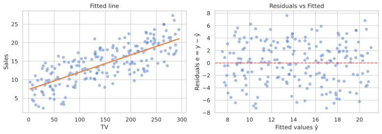
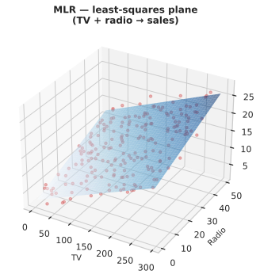
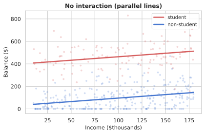
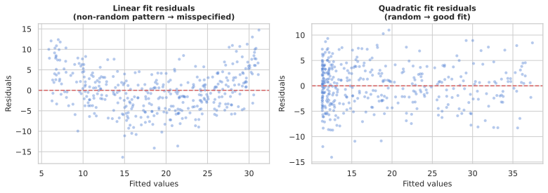

Where we are heading
Part 1
Simple linear regressionModel, RSS, least-squares formulas.
Part 2
Assessing coefficientsSE, confidence intervals, t-stat, p-value.
Part 3
Model accuracyRSE, R², correlation.
Part 4
Multiple linear regressionMLR, interpretation pitfalls, F-statistic.
Part 5
Variable selectionForward/backward selection, AIC, BIC, CV.
Part 6
Qualitative predictorsDummy variables, baseline, multi-level factors.
Part 7
Interactions & non-linearityInteraction terms, hierarchy principle, polynomial regression.
Linear regression is the foundation: every concept — coefficients, residuals, R², p-values — reappears in every model you'll ever build. Understand it deeply and the rest of the course is revision.
The linear regression model
- We assume Y = β₀ + β₁X + ε
- β₀ (intercept) and β₁ (slope) are unknown constants — the coefficients.
- ε is the error term: everything the model doesn't explain.
- True regression functions are never linear — but linear is often a useful approximation.
Advertising data — the running example

200 markets · TV, radio, newspaper budgets ($thousands) · sales (thousands of units). Positive trend — a straight line looks reasonable.
Least-squares estimation
- Prediction for the i-th point: ŷᵢ = β̂₀ + β̂₁xᵢ
- Residual: eᵢ = yᵢ − ŷᵢ (actual minus predicted)
- RSS = e₁² + e₂² + … + eₙ² = Σ(yᵢ − β̂₀ − β̂₁xᵢ)²
- Least-squares minimises RSS. The closed-form solution: β̂₁ = Σ(xᵢ−x̄)(yᵢ−ȳ) / Σ(xᵢ−x̄)², β̂₀ = ȳ − β̂₁x̄
Advertising example: fitted line
- β̂₀ = 7.03 → expected sales when TV = 0
- β̂₁ = 0.0475 → each extra $1 000 on TV is associated with ~47 additional units sold
- The fit captures the trend but under-predicts at low TV spend.

Predictions & residual diagnostics

Left: fitted line. Right: residuals vs fitted — any pattern here signals a mis-specified model. Predict: ŷ = β̂₀ + β̂₁x. Extrapolation beyond the training range is risky.
Standard errors of the estimates
- β̂₁ varies across repeated samples — its spread is SE(β̂₁).
- SE(β̂₁)² = σ² / Σ(xᵢ − x̄)²
- SE(β̂₀)² = σ²[1/n + x̄² / Σ(xᵢ − x̄)²]
- σ² = Var(ε) is estimated from the residuals (RSE²).
- Wider spread in X → smaller SE(β̂₁) — more information about the slope.
95 % confidence intervals

- A 95 % CI contains the true β with 95 % probability over repeated samples.
- Approximate formula: β̂₁ ± 2 · SE(β̂₁)
- Advertising TV: CI = [0.042, 0.053] — excludes zero → TV spend is reliably associated with sales.
Hypothesis test: is β₁ = 0?

- H₀: β₁ = 0 (no relationship). Hₐ: β₁ ≠ 0.
- t-statistic: t = β̂₁ / SE(β̂₁) = 17.67 for TV — far into the tail.
- p-value = P(|T| ≥ |t| | H₀) — shaded area above. Here p ≪ 0.001.
Results table: TV → Sales
| Coefficient | Std. Error | t-statistic | p-value | |
|---|---|---|---|---|
| Intercept | 7.03 | 0.4578 | 15.36 | < 0.0001 |
| TV | 0.0475 | 0.0027 | 17.67 | < 0.0001 |
Both coefficients are highly significant. The t-statistics are far from zero.
Residual Standard Error (RSE)
- RSE = √(RSS / (n − 2)) — the average size of a residual.
- It estimates σ, the standard deviation of ε.
- RSE is in the same units as Y (thousands of units of sales).
- Advertising TV: RSE = 3.26 → typical prediction error ≈ 3 260 units.
- Whether 3.26 is 'large' depends on the mean of Y (avg sales ≈ 14.0 → ~23 % error).
R-squared (fraction of variance explained)
- TSS = Σ(yᵢ − ȳ)² — total variance in Y before the model.
- RSS = Σ(yᵢ − ŷᵢ)² — residual variance after the model.
- R² = (TSS − RSS) / TSS = 1 − RSS/TSS
- R² ∈ [0, 1]: 0 means the model explains nothing; 1 means a perfect fit.
- Advertising TV: R² = 0.612 → TV alone explains 61 % of the variance in sales.
Summary for TV → Sales SLR
| Quantity | Value |
|---|---|
| RSE | 3.26 |
| R² | 0.612 |
| F-statistic | 312.1 |
61 % of variance in sales is explained by TV spend. Decent, but there is clearly more going on.
The MLR model
- Y = β₀ + β₁X₁ + β₂X₂ + … + βₚXₚ + ε
- Each βⱼ is the expected change in Y per unit increase in Xⱼ, holding all other predictors fixed.
- Advertising: sales = β₀ + β₁·TV + β₂·radio + β₃·newspaper + ε
- Least squares extends naturally — minimise RSS over all coefficients simultaneously.
- The fit is now a hyperplane in p+1 dimensions.
Woes of interpreting regression coefficients
- Mosteller & Tukey (1977): predictors usually change together — ceteris-paribus is theoretical.
- Example: newspaper appears significant alone, but insignificant in MLR — its signal was radio's.
- Correlations among predictors inflate variance and shift coefficients.

MLR results: Advertising data
| Coef. | SE | t | p-value | |
|---|---|---|---|---|
| Intercept | 2.939 | 0.312 | 9.42 | <0.0001 |
| TV | 0.046 | 0.001 | 32.81 | <0.0001 |
| radio | 0.189 | 0.009 | 21.89 | <0.0001 |
| newspaper | −0.001 | 0.006 | −0.18 | 0.8599 |
Newspaper is insignificant once radio is in the model (corr(radio, newspaper) = 0.35).
MLR coefficients and model fit

| Quantity | SLR (TV) | MLR (all) |
|---|---|---|
| RSE | 3.26 | 1.69 |
| R² | 0.612 | 0.897 |
| F-stat | 312 | 570 |
Newspaper CI crosses zero — not significant. MLR R² = 89.7 %.
MLR — least-squares plane

The least-squares plane through TV × radio space. Red dots: observations. Residuals are vertical distances from the plane to each point.
Is at least one predictor useful? — the F-test
- H₀: β₁ = β₂ = … = βₚ = 0 (none of the predictors help)
- F = [(TSS − RSS) / p] / [RSS / (n − p − 1)]
- Under H₀, F ~ Fₚ,ₙ₋ₚ₋₁. A large F rejects H₀.
- Advertising MLR: F = 570, p ≈ 0 → at least one of TV/radio/newspaper predicts sales.
- Do not rely on individual t-tests alone when p is large — you'll get false positives by chance.
Deciding which variables matter
- All-subsets: 2ᵖ models — infeasible for p ≥ 40.
- Forward selection: greedily add the predictor that most reduces AIC.
- Backward selection: drop the predictor with the largest p-value.
- Both are heuristics — no global optimality guarantee.

Choosing the optimal model size
- Adjusted R² = 1 − [RSS/(n−p−1)] / [TSS/(n−1)] — penalises for adding uninformative predictors.
- AIC = n·log(RSS/n) + 2p — prefer smaller AIC.
- BIC = n·log(RSS/n) + p·log(n) — stronger penalty than AIC; prefers sparser models.
- Cross-validation (CV) — the gold standard; directly estimates test MSE.
- All four criteria trade training fit against model complexity.
Encoding binary qualitative predictors
- Qualitative (categorical) variables can't enter the model as raw values.
- Create a dummy variable: xᵢ = 1 if female, 0 if male.
- Model: yᵢ = β₀ + β₁xᵢ + εᵢ = β₀ + β₁ (female) or β₀ (male).
- β₁ = expected difference in balance between females and males.
- pandas:
pd.get_dummies(df, drop_first=True)
Credit card data: gender model
| Coefficient | SE | t | p-value | |
|---|---|---|---|---|
| Intercept | 509.80 | 33.13 | 15.39 | <0.0001 |
| gender[Female] | 19.73 | 46.05 | 0.43 | 0.669 |
Female cardholders carry $19.73 more balance on average — but p = 0.67, not significant.
Multi-level factors: ethnicity example
- For k levels, create k − 1 dummy variables. The omitted level is the baseline.
- Ethnicity (3 levels): create Asian and Caucasian dummies; African American is baseline.
- yᵢ = β₀ + β₁·Asian + β₂·Caucasian + εᵢ
- β₀ = expected balance for AA; β₁ = AA–Asian difference; β₂ = AA–Caucasian difference.
Credit card data: ethnicity model
| Coefficient | SE | t | p-value | |
|---|---|---|---|---|
| Intercept (AA) | 531.00 | 46.32 | 11.46 | <0.0001 |
| ethnicity[Asian] | −18.69 | 65.02 | −0.29 | 0.774 |
| ethnicity[Caucasian] | −12.50 | 56.68 | −0.22 | 0.826 |
Neither Asian nor Caucasian is significantly different from African American in balance.
The additive assumption and its limits
- The standard MLR model assumes each predictor's effect on Y is additive and independent.
- Advertising: the effect of TV on sales is the same regardless of radio spend.
- But: if radio boosts the effectiveness of TV ads, the model underestimates sales when both are high.
- This is a synergy (marketing) or interaction (statistics) effect.
Adding an interaction term
- Interaction model: sales = β₀ + β₁·TV + β₂·radio + β₃·(TV × radio) + ε
- β₃ captures how the effect of TV on sales changes as radio increases.
- The effective slope for TV is: β̂₁ + β̂₃ × radio.
- An extra $1 000 on TV → (19 + 1.1 × radio) additional units sold.
Interaction model: results
| Coef. | SE | t | p-value | |
|---|---|---|---|---|
| Intercept | 6.750 | 0.248 | 27.23 | <0.0001 |
| TV | 0.019 | 0.002 | 12.70 | <0.0001 |
| radio | 0.029 | 0.009 | 3.24 | 0.0014 |
| TV×radio | 0.0011 | 0.000 | 20.73 | <0.0001 |
R² jumps from 89.7 % (additive) to 96.8 %. The interaction term explains 69 % of the remaining variance.
The hierarchy principle
- If an interaction term is included, always include the main effects too — even if their p-values are not significant.
- Reason: without main effects, the interaction term also absorbs them — its coefficient changes meaning.
- Rule of thumb: interaction in → main effects in.
- Applies equally to qualitative × quantitative interactions (e.g., student × income).
Qualitative × quantitative: student example

No interaction — parallel lines (same slope)

With interaction — different slopes
Non-linearity: polynomial regression

Linear under-fits (misses curvature). Quadratic (degree 2) fits well. Degree 5 overfits — wiggles at the extremes. sklearn: PolynomialFeatures(degree=2) + Pipeline.
Residual diagnostics: linear vs quadratic

Left: linear residuals show a clear arch — the model is mis-specified. Right: quadratic residuals are random — the curvature has been captured. Cross-validation would select degree 2.